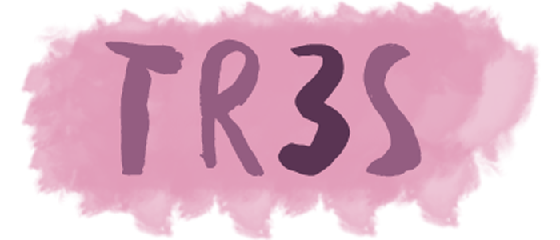
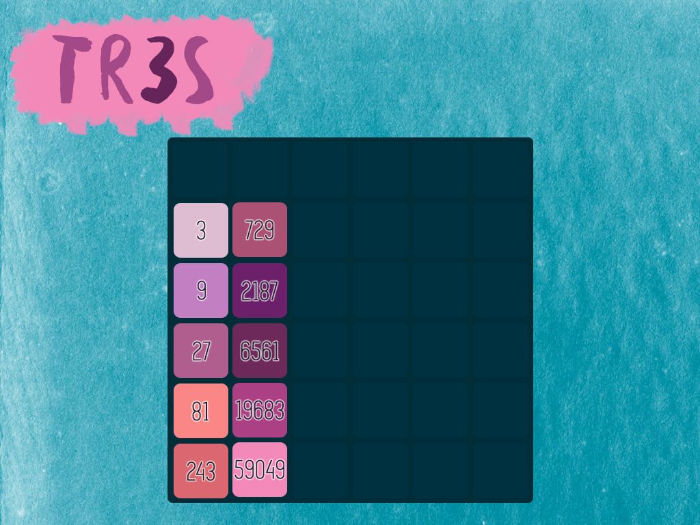

" width:"100%" height:"300px" >
TR3S
TR3S is a spin-off of the popular '2048' game. Instead of using the powers of 2, we used the powers of 3.
How to play
- You will start with two tiles on the board. Use the arrow keys on your keyboard to move the tiles.
- Tiles move as far as possible in the direction that you pressed. A new tile will be placed randomly on the board.
- You need three tiles of the same number to line up and slide together to form a new tile.
- You win the game when you have reached the tenth power of 3 which is 54049
- You lose the game if the board is filled with tiles and there are no other possible moves.
